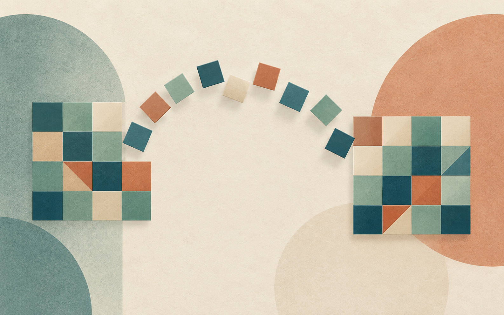
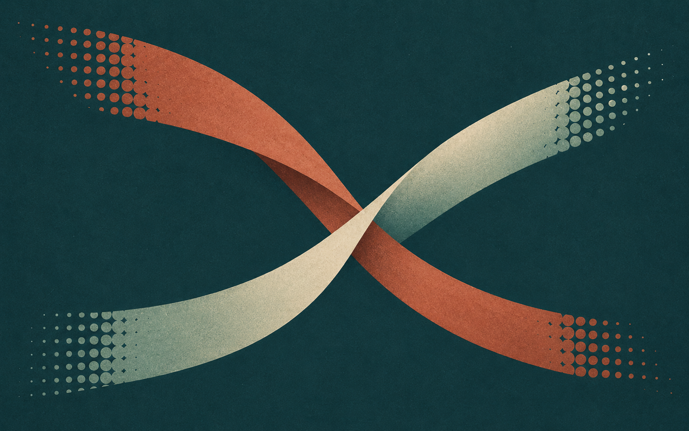

01 / STUDYCOLOR寻色迁移
↗CHROMATIC TILE TRANSPORT
格片携带原图的颜色，沿各自的曲线找到下一幅画面的位置。
让每一种颜色，在下一幕找到归处。
OKLab · 一对一配对 · 曲线迁移进入实验 01 →

02 / STUDYMOTION绯刃交锋
↗MATRIX MOTION
对峙、突进、交锋、腾空与决胜斩。
五段战斗番镜头，让青紫刀光穿过固定点阵。
战斗番 · 大幅动作 · 五镜头进入实验 02 →
 03 / STUDYSPACE
03 / STUDYSPACE画中门
↗PORTAL THRESHOLD
穿过画框，走进仍在呼吸的下一间展厅。
空间 · 门廊 · 漫游进入实验 03 →
 04 / STUDYTIME
04 / STUDYTIME时差场
↗TEMPORAL FIELD
这一刻的中心，是几秒之前的边缘。
影像 · 切片 · 回看进入实验 04 →
 05 / STUDYMATTER
05 / STUDYMATTER液态画布
↗LIQUID CANVAS
用手指拂过，让一幅画学会流动。
材料 · 墨色 · 流动进入实验 05 →
 06 / STUDYLIGHT
06 / STUDYLIGHT光学展柜
↗OPTICAL VAULT
光线穿过玻璃，折射与叠影交织成另一幅画。
光路 · 折射 · 分界进入实验 06 →
 07 / STUDYFORM
07 / STUDYFORM影子机关
↗SHADOW APPARATUS
同一个不规则实体，藏着两种清楚的答案。
光源 · 投影 · 形态进入实验 07 →
 08 / STUDYPAPER
08 / STUDYPAPER折叠剧场
↗FOLDING THEATER
沿着折痕，平面的世界慢慢站起来。
折痕 · 铰链 · 展开进入实验 08 →